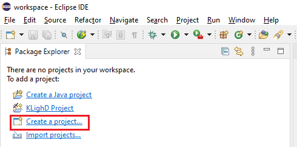
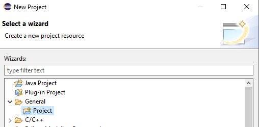
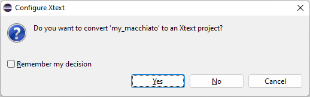
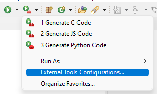
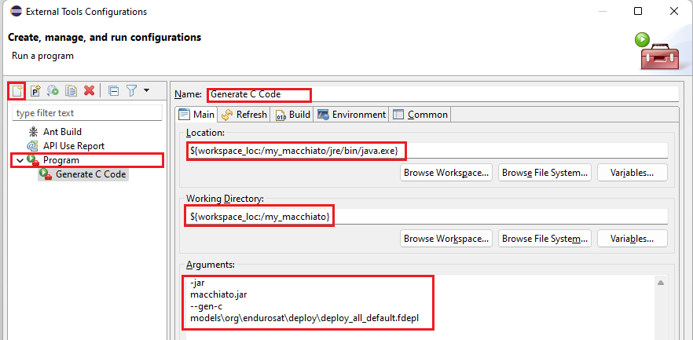
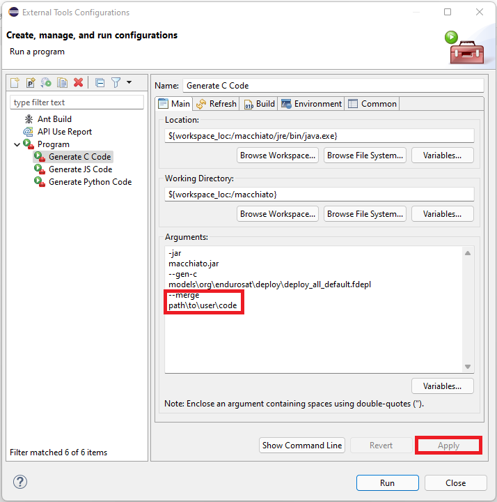

Code Generation
ESPS Function Protocol
At present, Macchiato provides code generators targeted to the ESPS Function Protocol so the code that Macchiato generates for the satellite modules is the implementation of the FP for the specific interfaces listed in your deployment model. In a typical system, the code lives in the FP layer as shown below:
| Layer | Description |
|---|---|
| PHY | Physical layer (in ESPS I case, this is UART over RS485) |
| MAC | ESPS bus access driver |
| FP | Function Protocol layer |
| APP | User applications |
Franca IDL reference
The Franca IDL is a domain specific language for interface definition and as such it provides many specific features. Full language reference is provided in the Macchiato package. The code generators that we implemented rely only on specific features though. Support for others may be introduced in the future. Check the tabs below to see what Franca features you can rely on to describe interfaces...
Features
Every Franca language construct has to be supported by the Macchiato code generators in order to convert it to working source code. The current version of Macchiato supports the following Franca base types:
| Type name | Supported |
|---|---|
| UInt8 |  |
| Int8 | |
| UInt16 | |
| Int16 | |
| UInt32 | |
| Int32 | |
| UInt64 | |
| Int64 | |
| Integer | |
| Boolean | |
| Float | |
| Double | |
| String | |
| ByteBuffer | |
Similarly, the current version of Macchiato supports the following Franca language constructs:
| Feature | type Supported |
|---|---|
| Primitive constant |  |
| Complex constant | |
| TypeCollection | |
| Interface inheritance | |
| Attributes | |
| Methods | |
| Broadcasts | |
| Contracts | |
| Structured comments |  (only partial support) (only partial support) |
| Deployment models | |
Macchiato generators
This version of Macchiato contains the following generators:
| Generator | Description |
|---|---|
| C | ESPS I C source code generator (client/server bindings) |
| python | ESPS I Python source code/GUI YAML generator. Python interface |
| JS | ESPS I JavaScript source code (JavaScript client API) for the SDE1 |
| LaTex | ESPS I LaTeX documentation generator |
| DataCache | DataCache module generation (C, python and fidl for ESPS) |
You might have observed that in the following sections not all the generators are explained. This is because they are only relevant for certain uses of the EnduroSat's products. These are the LaTex and the DataCache generators.
Latex generation
The LaTex generator creates a reference documentation for the interfaces described in the fidl files. This can be used to generate automatic documentation based on the comments and description tags (<** @description: ... **>) that can be added in the fidl files. Something like this:
1 2 3 4 5 6 7 8 9 10 11 12 | |
Datacache generation
The DataCache generator, generates the code in C and Python to interact with the datacache structures defined in the DataCache.fidl file. It also generates a fidl file that can be used with the C generator to generate the ESPS interface to gather the datacache types previously generated. This specific generator uses other files that may not be included in your Macchiato release.
This generation will be usefull in the case you are using EnduroSat's OBC Starter Kit. If you think you need to use them, do not hesitate to reach out.
Eclipse IDE setup
In case you need to create your own interfaces or to modify the deployment specifications or models, we highly recommend that you use the Eclipse IDE for Java and DSL Developers for the best possible experience. It will help you produce error-free interfaces thanks to the syntax highlighting.
The following steps will help you to setup a new xtend project to be able to edit your interfaces and generate the code.
Create a workspace
Create a folder where you can later include the xtend project. Open Eclipse and select the folder you just created as a workspace.
Create a new project
You can create an empty project from the PackageExplorer tab (if there are no projects already in the workspace):

Note
If you don't see that option, you can create a project from the menu File New Project...
A window will pop-up. You can select Project under the General menu:

Give your project a name and move the files inside the Macchiato package to the folder.
Tip
You can just drag and drop the files in the Eclipse IDE and it will usually ask whether you want to copy the files or to link them. It is recommended to copy them.
Important
Once you have the files, you can try to open one of the .fidl files in the editor. Eclipse will prompt you with the option to change the project to a Xtend project type. This will keep the highlighting and the syntax checks and it will generate the intermediate files in the folder src-gen.

Add the run configuration
Once the project has the files, you can create an external run configuration to be able to generate the code from the fidl files using the provided jre and the macchiato.jar. Select the black arrow next to the icon of the external tools, in the tools bar, to see more options. Then select External tools configuration...:

You can double click on Program in the left side to create a new configuration and then fill up the following information:
- Name: descriptive name for the run command
- Location: from Browse Workspace, select the java.exe file within the jre folder 2
- Working Directory: select the project directory
- Arguments: add arguments to execute the .jar file with java.exe:
-jar macchiato.jar --gen-c models\org\endurosat\deploy\deploy_all_default.fdepl

Once you apply your changes you can run the configuration and you should see the output in the Console view of the Eclipse IDE. For more information about the options that the macchiato.jar file admits, go to the calling macchiato.jar section.
Tip
If the Eclipse IDE fails to run, you can always edit and run the generation script, start_gen.bat, as described in the following section.
Generated files and folders
| Folder / File | Description |
|---|---|
 src-gen src-gen |
xtend generated java sources |
| src-gen-c |
Macchiato generated C code |
| src-gen-py |
Macchiato generated Python code |
| src-gen-js |
Macchiato generated JavaScript code |
| src-gen-tex |
Macchiato generated LaTex documentation |
| src-gen-dc |
Macchiato generated DataCache fidls |
Calling macchiato.jar
Instead of using the script start_gen.bat, which you can always modify to fulfil your needs, you can call the generator from a command window.
The command for the generation has the following structure:
Important
The java.exe called, should be the one located in the jre folder of Macchiato. Running Macchiato with other versions of the jre might lead to unexpected errors.
1 | |
<GENERATOR>: Type of generator to use. Each generator will generate source code in a particular language (i.e.--gen-cis for C)<FDEPL_FILE>: Path to the deployment file that contains the definition of the specification and the interface to be generated--merge: Auto merge option to merge the user code with the new generation of the code<MERGE_FOLDER>: Path to the folder that contains the user code to be merged-vor--verbose: Any of these options enables debug messages that provide additional information of the generation. It will print out every file that is generated.
If you run macchiatto.jar with no arguments, you will see the usage information and a list of supported generators.
1 2 3 4 5 6 7 8 9 10 11 12 13 14 15 16 17 18 19 20 | |
The default file with the deployment models for the code generation is located in models\org\endurosat\deploy\deploy_all_default.fdepl.
Generated files and folders
| Folder / File | Description |
|---|---|
| src-gen-c |
Macchiato generated C code |
| src-gen-py |
Macchiato generated Python code |
| src-gen-js |
Macchiato generated JavaScript code |
| src-gen-tex |
Macchiato generated LaTex documentation |
| src-gen-dc |
Macchiato generated DataCache code |
Continue to the next sections to get more information about each of the generated outputs.
Merging with the User Code
There is the possibility to merge the generated code with a previosly version and to keep the user code.
Tip
Always keep a copy of the code before merging. Just in case.
Note
This is only supported for the C Code Generator.
You can provide the option --merge and the folder where the previous generation is. Macchiato will gather all the code that is between user tags. These tags usually have something like @START_USER@ or @USER_VAR_SECTION_START@. Whatever is between the START tag and the END tag is going to be kept by Macchiato and added in the new generated files.
Note
Not all the generated files have user code tags in them. For this version of Macchiato, only the files that are FP_<protocol>ClientApp.c or FP_<protocol>ServerApp.c.
Example of user tags:
1 2 3 4 5 6 7 8 9 10 11 12 | |
Attention
If the tags are modified by the user the merge will not be ok and it may end up with the loss of some of the user code.
Warning
Modifying the name of a method in the fidl files will generate a different tag and, therefore, the merge will fail for that method.
Merge operation
Here are described the steps followed by Macchiato from the generation to the merge of the user code. Imagine we are calling Macchiato to generate the LED interface and to merge it with the contents in the folder my_project/my_FP_Protocols.
- First Macchiato will generate the source from the user fidl file as normally and save it in the
src-gen-c/LEDfolder. - Then it will look for the user files which should be located in
my_project/my_FP_Protocols/LED. - It will read the files there and keep the user code found between tags.
- Then merge the contents of the generated code in
src-gen-c/LEDwith the code found in the tags. - Overwrite the contents in
my_project/my_FP_Protocols/LEDwith the merged new generation.
If a tag is not anymore in the new generated code, it will not be in the new merged files.
Attention
Macchiato doesn't ask for confirmation when merging the content so it is advisable to keep a copy in a git repository or a backup of some kind.
Macchiatto will expect to find the whole folder hierarchy in the user code path (i.e. LED/v1.0/FP_Common/FP_Helpers.h). Therefore, if you need to change the version of the interface you are generating, Macchiatto will not find the user code since it will be in the previous version folder.
Tip
If you update the interface version, you can trick macchiato into merging by renaming the old version folder to the new. Run macchiato with the merge option again to recover the usercode from the files.
As an example, if we had the version v1.0 of the LED interface, and we are generating the version v1.1, we should rename our folder as my_project/my_FP_Protocols/LED/v1.1/rest_of_subfolders.
How to call the merge
If you want to merge your user code with the new generated code you will need to add the --merge option. Like this:
java -jar macchiato.jar --gen-c [my\deployment\model.fdepl] --merge path\to\my\code
You can call this directly from a command window within the macchiato folder like explained in the quickstart section.
If you are using the Eclipse IDE for the generation, you will need to add the additional arguments to the External Tools Configuration. Open the confituration as shown in the picture below:
Then add the merge option and the path to the folder that contains the user code to the Generate C Code configuration and Apply the changes:

Running that configuration now should merge the C Code with your previous generated code, keeping the user additions within the tags.
-
Space Development Environmet is a different Endurosat product. Contact us for more information. ↩
-
It is important to use the given version with Macchiato, otherwise you could get unexpected behaviour or build errors. ↩